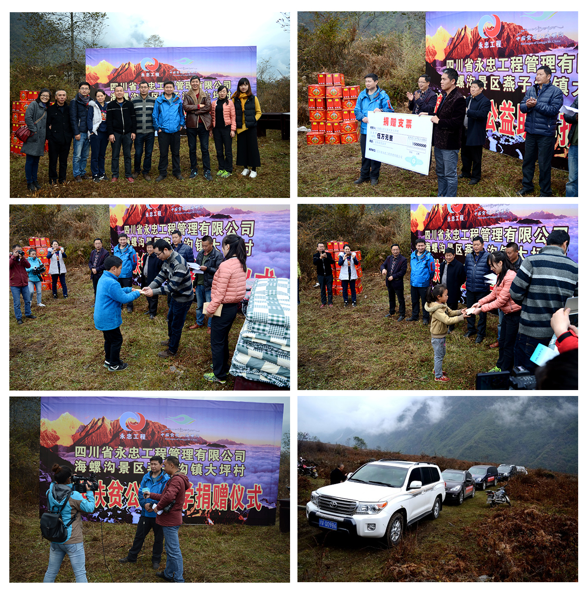

2016年11月22日，在寒风萧瑟中，四川省永忠工程管理有限公司总经理徐宁及公司中高层管理人员一行十人，怀着无比美好真挚
的愿望，满怀热情地来到海螺沟燕子沟大坪村，与活动主办方海螺沟景区管理局党委委员政治部主任龚自毅、大坪村帮扶单位、驻村
工作组、乡镇领导干部及27名受捐学生及家长代表一起参加了这次捐资助学活动。整个活动在一片祥和欢乐的气氛中进行。
本次捐资助学活动旨在弘扬中华民族“扶贫济困.帮扶弱势群体”的优良传统；践行永忠公司“诚信.感恩.责任”企业文化精神的社会实践和社会责任；送去永忠公司对海螺沟大坪村贫困村民和孩子们的关爱和力量！一滴水珠，可以映出太阳的光芒；一份善举，可以让受助者温暖、让行善者快乐，永忠公司75名员工用实际行动诠释了公司企业文化精神“诚信.感恩.责任”的深刻内涵，大家积极踊跃参与“爱心捐助.金秋助学.我们在行动”的捐助活动中，永忠公司共为海螺沟景区燕子沟大坪村87名贫困村民和27名贫困学子捐出爱心款共计15万元。爱心的力量、团队的力量汇聚成海，广袤无边…赠人玫瑰，手留余香。此次海螺沟大坪村金秋助学活动虽已结束，但我们永忠人服务社会、回馈社会的爱心善举将永无止境！
海螺沟景区委委员政治部主任龚自毅、乡镇领导干部及学生代表分别发表了肺腑感言，对四川省永忠工程管理有限公
司的爱心捐助表示诚挚由衷地感谢！四川省永忠工程管理有限公司总经理徐宁表示：在企业发展的同时，尽绵薄之力扶助贫困学子，
是公司义不容辞的责任。将为大坪村27名在校学生：其中大学生1名、高中（中专）生5名、初中生8名、小学生13名，进行连续3年
每年5万元的公益助学捐赠，帮助大坪村贫困学子能够有条件通过学习改变自己的命运，让他们感受到政府和社会的温暖与关爱，长大
后回馈感恩社会。 最后：大坪村受助贫困学生家长代表刘福强表达了对四川省永忠工程管理有限公司捐资助学的衷心感谢，对政府
扶贫工作的支持，希望孩子们在学习文化知识的同时，学会感恩：感恩父母！感恩政府！感恩社会!扶贫济困，慈悲为怀；帮助弱势群体，贫困山区，是人类美好情感的体现、是中华民族的优良传统，更是我们每个永忠人的责任
